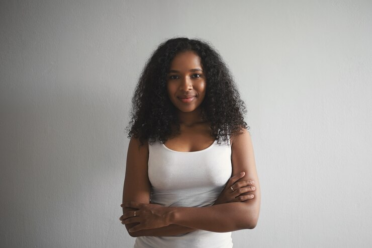
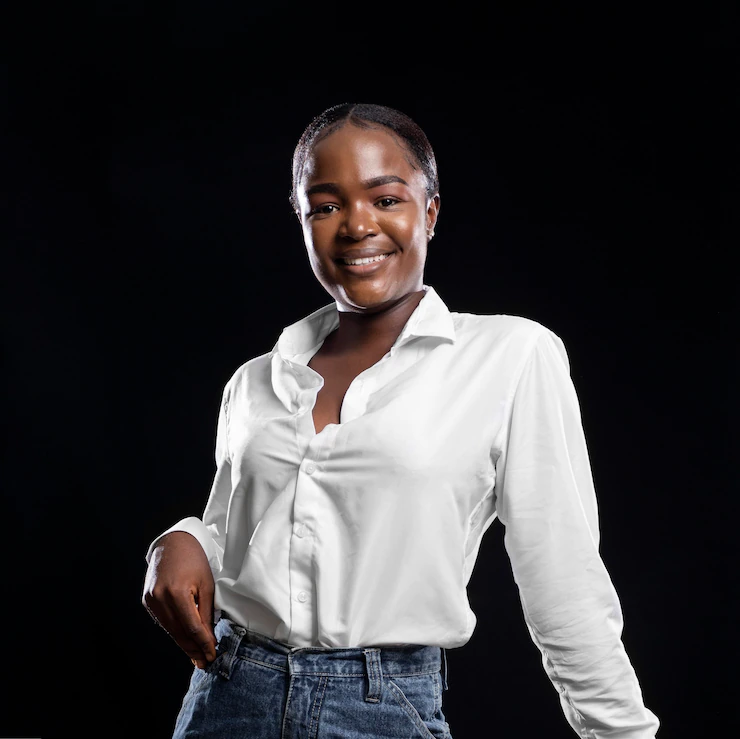

Meet The Team
Moremi Techstars Foundation is inspired by an energetic and forward-thinking team that primarily consists of volunteers who are working full-time jobs, raising families, and have a passion for improving the lives of girls and women in Nigeria.

Samuel Adetogun
Founder, CEO LeumaxTECH

Olayinka Mary
Project Manager
Oladejo Yusus
Community Manager

Adekan Bassey
Talent Manager